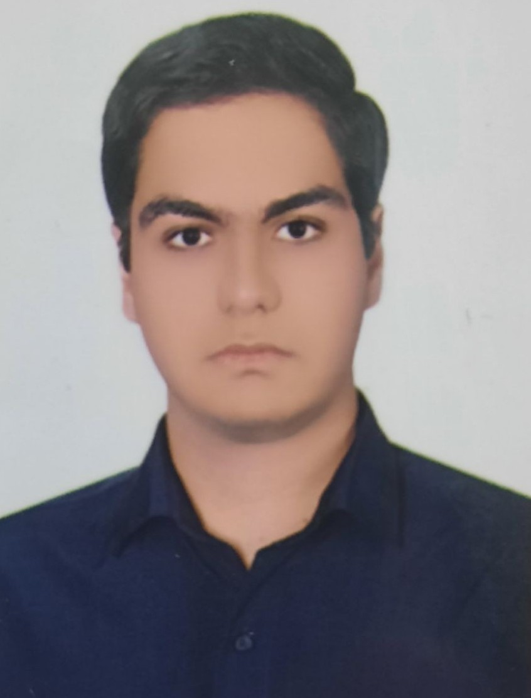

Multimodal Trading Agents
Deep RL agents that fuse technical, fundamental, and textual market signals through transformer and xLSTM architectures with conservative on-policy diffusion policies.
Computer Engineering · AI Research
Undergraduate researcher at Shahid Beheshti University and IPM, working across deep reinforcement learning, multimodal systems, and computational neuroscience.

Profile
I am a Computer Engineering undergraduate at Shahid Beheshti University, conducting research at the Institute for Research in Fundamental Sciences (IPM) and SBU. My work spans deep reinforcement learning for financial decision-making, physics-informed neural networks, graph-based time-series modeling, blockchain systems, and MEG-based neural signal processing.
I also serve as a Teaching Assistant at SBU and Sharif University of Technology, mentoring students across programming, architecture, algorithms, and blockchain.
Inquiry
Current lines of work across learning systems, markets, neural signals, and decentralized infrastructure.
Deep RL agents that fuse technical, fundamental, and textual market signals through transformer and xLSTM architectures with conservative on-policy diffusion policies.
Graph and hypergraph neural networks for structured market dynamics, relational forecasting, and interpretable temporal dependencies.
PG-KINN: Petrov–Galerkin Kolmogorov–Arnold networks for forward and inverse PDE solving with stronger inductive bias and numerical structure.
Computational pipelines for magnetoencephalography preprocessing, source localization, and decoding of visual and cognitive neural patterns.
Ethereum protocol design, smart-contract development, consensus behavior, and security analysis of cryptocurrency and DeFi infrastructures.
Scholarship
Elsevier · Preprinted at SSRN
Elsevier
arXiv preprint
Appointments
Institute for Research in Fundamental Sciences · Dr. Dara Rahmati
Developing deep RL and multimodal AI systems for financial modeling and automated trading, including MTDP-PPO, fused xLSTM–PPO agents, PG-KINN, and graph/hypergraph models of market dynamics.
Blockchain & Distributed Systems · Dr. Maedeh Mosharraf
Investigating Ethereum protocol design, Solidity smart contracts, consensus mechanisms, on-chain transaction modeling, and DeFi security analysis.
Computational Neuroscience · Dr. Narjes Soltani
Building MEG preprocessing, source localization, and neural decoding pipelines with machine learning and spectral/time-frequency analysis for visual perception and cognition.
Formation
Shahid Beheshti University, Tehran
National Organization for Development of Exceptional Talents (Sampad), Zanjan
Instruction
Academic Teaching Assistant at Sharif University of Technology and Shahid Beheshti University.
Selected work
Adversarial search with Minimax and Alpha–Beta pruning, heuristic evaluation, and experimental performance–optimality analysis.
Iterative SVD and PCA latent-factor modeling with RMSE/MAE evaluation and embedding visualization.
Page-replacement policy evaluation (LRU, Second Chance) with multi-run statistical analysis of fault rates.
MIPS-like processor design in Verilog with pipeline execution validated in ModelSim.
Toolkit
Recognition
Correspondence
Open to graduate research discussions in AI, machine learning, and related systems.